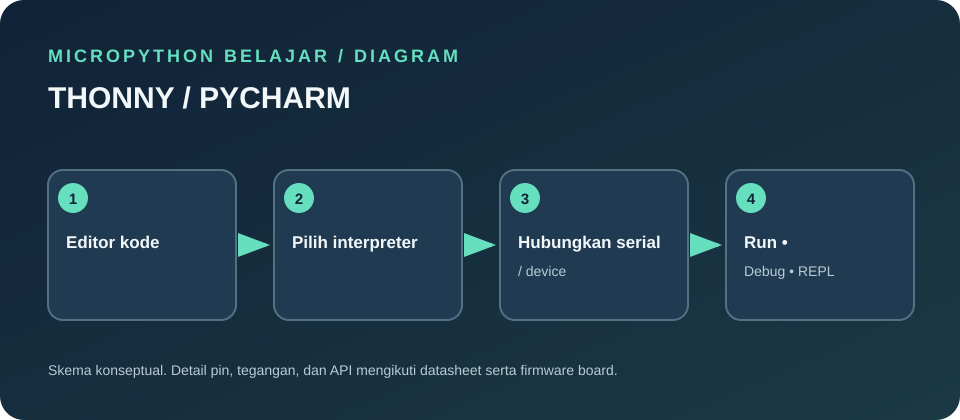

Menggunakan PyCharm untuk MicroPython
Lingkungan proyek yang lebih terstruktur untuk kode dengan banyak modul dan workflow pengembangan yang lebih besar.

Kapan menggunakan PyCharm?
PyCharm menarik ketika proyek mulai memiliki banyak modul, perlu navigasi kode yang lebih kaya, dan dikelola sebagai proyek perangkat lunak. Untuk satu file LED blink, IDE besar mungkin berlebihan.
Persiapan
- Instal PyCharm dari situs JetBrains.
- Buat proyek baru dengan direktori yang terpisah dari file firmware.
- Periksa plugin MicroPython yang tersedia dan kompatibel dengan edisi serta versi PyCharm.
- Aktifkan dukungan MicroPython jika plugin menyediakan pengaturan tersebut.
- Pilih jenis board dan port serial sesuai perangkat.
Struktur proyek sederhana
proyek-micropython/
├── README.md
├── src/
│ ├── main.py
│ ├── config.py
│ └── sensor.py
└── docs/
└── wiring.mdContoh program
print("Proyek MicroPython dimulai")Gunakan perintah upload/flash yang disediakan plugin bila tersedia, atau pakai mpremote sebagai tool independen untuk memindahkan file ke board. Jangan memasang paket bernama machine dari PyPI ke komputer untuk mengakses GPIO; modul tersebut merupakan bagian dari firmware MicroPython pada perangkat.
Catatan kompatibilitas
Dukungan MicroPython pada PyCharm bergantung pada plugin pihak ketiga dan versi IDE. Periksa dokumentasi plugin saat instalasi. Jika pengaturan device tidak tersedia atau tidak berfungsi, gunakan Thonny atau mpremote daripada memaksakan konfigurasi yang sudah usang.
Target setelah level pemula
Pastikan dapat memasang firmware, terhubung ke REPL, menyimpan file ke board, dan menjalankan program saat perangkat reboot.